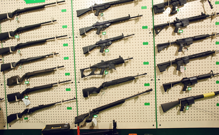
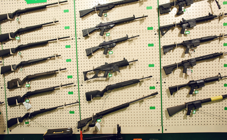

las armas permitidas para la cazeria van dependiendo de que vallan a cazar desde
rifles
escopetas
rifles
Rifles. Generalmente, los rifles de cerrojo giratorio son el tipo más preciso de rifle. Recomendamos que los cazadores principiantes usen un rifle cargado con calibre . 25 o mayor
escopetas
La escopeta de caza es normalmente un arma de ánima lisa, cuya efectividad se circunscribe hasta los 80 m de distancia. Aunque es cierto que existen modelos con ánima rayada y proyectiles sabot que permiten extender su alcance hasta los 150 mLa escopeta de caza es normalmente un arma de ánima lisa, cuya efectividad se circunscribe hasta los 80 m de distancia. Aunque es cierto que existen modelos con ánima rayada y proyectiles sabot que permiten extender su alcance hasta los 150 m
 
